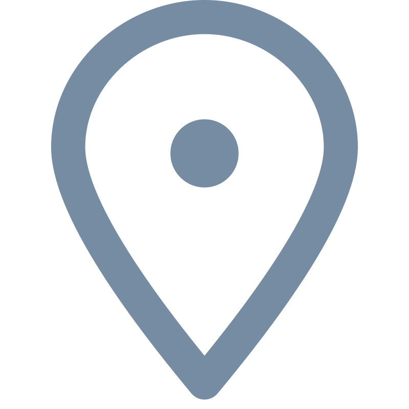

Natalia Bayramova
Contact Information
-
 Telegram: @fynnriel
Telegram: @fynnriel
-
 Discord: @fynnriel.
Discord: @fynnriel.
- LinkedIn: natalia-bayramova
-
 Github: @fynnriel
Github: @fynnriel
-
 Email: natalya.zelenina.96@mail.ru
Email: natalya.zelenina.96@mail.ru
-  Russia, Saint Petersburg
Personal information
My career path includes several months working as an engineer at company, which produced data security and information systems support. In addition, over the past three years I have been developing my soft skills, reached a new level in writing texts, showing an active interest in marketing.
As for now can confidently say - being broad-minded person I have no doubts in advantages of mastering new profession, called frontender.
Skills
- Java Basics, JavaScript Basics
- HTML and CSS
- C++ basic knowledge
- Git
- SQL
- IntelliJ IDEA
Education background
- Web programming course by ITMO University on OpenEdu
- Halfly completed (45%) Java Basics course by EPAM.training
- RS Schools Course «JavaScript/Front-end. Stage 0» (in progress)
- Bachelor’s Degree in Information Technology, Ufa State Petroleum Technical University, field of study - Computer Science and Computer Technology
Languages
- Russian - Native
- Bashkir - Basic
- English - Upper-intermediate B2 (Proficiency C1 in 2019 according to Anglia international exam, due to lack of speaking level has dropped a bit)

Current English level according to SmallTalk
My project
RSS Stage0 ProjectCode sample
As a beginner to such a challenging coding practice, sharing the very first solution from Codewars:
function multiply(a, b){
return a * b;
}
So, the problem was a missing semicolon.